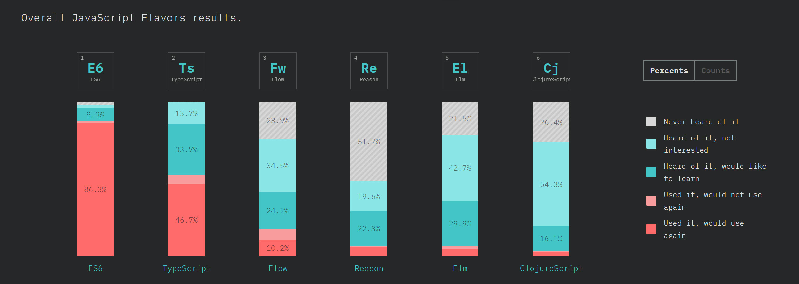

Moderne Frontend-Architektur mit JavaScript
Classic Web Applications

- Browser sends HTTP Request
- Content is rendered on the Server
- HTML is sent back to the Browser
- Browser only shows the page to the user
- Each interaction repeats this round-trip
- Frequent page load means severe limitation to UX
jquery / AJAX
Add some adhoc JavaScript snippet when UI needs to be responsive

- some renedering in the Browser, some on the server
- architecturally a PITA
- starts as a solution nice, quick and easy to implement
- sooner or later results in unmaintainable code
Why not just jQuery?
- jQuery is very good at changing sets of existing elements
- good if there already are existing elements
- unobtrusive
- not so good, if there is nothing to begin with
- not so good for controlling page/view flow
- not so good if you have a desktop like application
SPA: Single Page Application
Move your Application to the Client

- only one (single) HTML page that mainly loads JavaScript and CSS
- Server has Data-API (JSON/REST API)
- Server can still hold Business Logic (or it is on the client only)
- allows for Offline and best UX
- same challenges as all rich frontend applications
Why use a standard Framework?
- avoid the risk of accidentally creating your own
- use something proven and tested
- community, documentation
- easily find skill and talent
Why using type systems?
type systems make code easier to maintain
type annotations / inferred types
- can make code more readable
- can make code easier to analyse
- can allow for reliable refactoring
- can allow for generally better IDE support
- can catch some (type related) errors early
Anders Hejlsberg@Build2016: Big JavaScript codebases tend to become "read-only".
weak to strong and dynamic to static

JavaScript flavors
TypeScript
ease of use and tool support over soundness
- By Microsoft (Anders Hejlsberg)
- Based on ES67ES7/ES8
- Adds optional type annotations, visibility, and decorators
- Compiler checks and removes annotations
- External declarations can add type information to pure JavaScript
- Extensive support in WebStorm and Visual Studio Code
- supporting people from Java and C# land
Basics
// variables can have type information
let foo: string;
foo = 'yo';
// Error: Type 'number' is not assignable to type 'string'.
foo = 10;
// types can be inferred (return type)
function sayIt(what: string) {
return `Saying: ${what}`;
}
const said: string = sayIt(obj);
class Sayer {
what: string; // mandatory
constructor(what: string) {
this.what = what;
}
// return type if you want to
sayIt(): string {
return `Saying: ${this.what}`;
}
}
Single-Page Applications
Components with Templates
A SPA is composed of (business) components:
- Templates describe the UI of the component
- But now:
- Logic is part of the component
- Logic is a "first-class" citizen and no longer a "loose" snippet (like in jQuery)
- Logic is fully executed on the client
- Prominent Frameworks: React, Angular, Vue, and Web Components (Polymer)
Composing an Application from Components
Smart and Dumb Components*
*also known as Mediator Pattern with Web Components / Polymer
Smart Components
- Managing (part of) the application state
- Contain UI logic
- Pass parts of the state as immutable data to subcomponents
- Pass callbacks to subcomponents for interaction
- Mostly domain-specific, not intended to be reusable
Aka Container
Dumb Components
- only for presentation, no logic
- but might contain own ("transient") state
- have no knowledge or dependencies to their surrounding components
- children of Dumb Components are usually other Dumb Components (but there are exceptions)
- reusable
Aka Presentational Component or just Component

Smart and Dumb Components
Limitations
Mainly with growing and long-living applications
- "God-like" components: State and logic tend to slowly move up to a few really fat components
- Distributed, mutatable state makes maintainability and understanding hard
- Where does the state belong to?
- In which state is the application?
- Mash up of framework and UI code (hardens switching the framework)
- Still open questions regarding the architecture
- How to handle asynchronous code?
- How to do proper initialization of the application?
- How to test the business logic?
Redux
- Central state management: one store for whole app, like a database
- External state management: extract logic from the (UI-)components
Redux
Architectural guidance
- Uni-directional data flow
- Central and immutable state: store
- Only reducers are allowed to modify state
- State moves from Smart Components to store
- UI logic moves from Smart Components in Action-Creators / Services and Reducer
- Asynchronous code only in Action-Creators / Services or Effects
- Initializing of the app with central action
Redux is independent of UI framework
Bindings exist for popular UI frameworks
- React: http://redux.js.org/docs/basics/UsageWithReact.html
- Angular: https://redux.js.org/
- Vue: https://github.com/vuejs/vuex
- Web Components (Polymer): Redux is recommended implementation of Global Mediator Pattern, https://twitter.com/DJCordhose/status/899943415353311232 https://tur-nr.github.io/polymer-redux/
Redux extracts responsibility out of Components

Redux Pattern, Resulting Architecture

Architektur-Ansätze
für Micro Frontends
Integration einzelner Micro Frontends (Module)...
-
über "normale" HTML Links

-
(Kudos an @axelfontaine für den Namen)zur Build-Zeit

-
im Browser

Prominentes Beispiel: Outlook Online

UX-Schwächen, unterschiedliche Technologien, jede App wird anders dargestellt
Wechsel der App dauert (Service Workers können die Zeit ab 2. Aufruf vermindern)
Prominentes Beispiel: Google Docs

Keine architekturbedingten UX Probleme
Prominentes Beispiel: Spotify

https://www.quora.com/What-is-the-technology-stack-behind-the-Spotify-web-client/answer/Andreas-Blixt
https://www.quora.com/How-are-Spotify-Web-Player-components-developed
https://www.reddit.com/r/reactjs/comments/5sgkro/til_spotify_is_using_reactredux_in_their_web_app/
überraschende UX Schwächen, Apps nur gleichzeitig dargestellt, aber nicht komplett integriert
Vielen Dank!
Der Browser ist reif genung, um auch langlebige, geschäftskritische Anwendungen zu hosten
Es gibt Architektur-Ansätze für große und wartbare Anwendungen